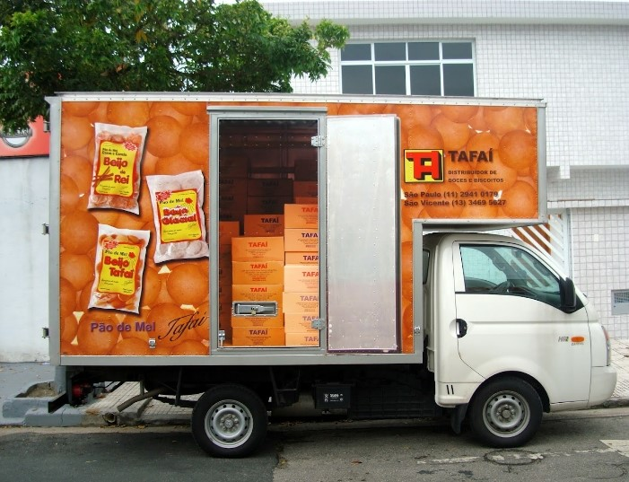
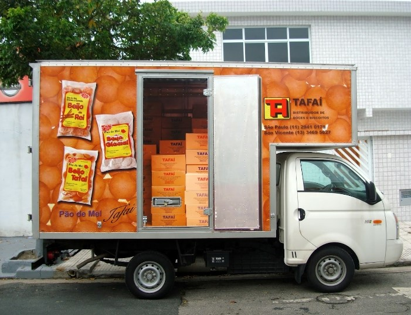

Olá, seja bem-vindo! Sou o Reinaldo Mota. Obrigado pela visita. Então, sabe o que significa a palavra Tafaí? Não né? Pois é, nem eu! Só sei que quando criança, com minha família, vivíamos mudando de sítio em sítio, trabalhando nas roças da região de Arapongas-PR. E assim, a família do sitiante Manoel Rodrigues me chamavam de Tafaí. Eles nunca souberam ou não lembravam o porquê me apelidaram assim. Bem, aos 17 anos o bicho do mato foi para São Paulo. Depois de muitos perrengues. Trabalhei para o Sílvio Santos, Abílio Diniz, Mataraso e no Metrô. Em 1979 comecei a trabalhar por conta própria. Com uma Komb bem baqueada, eu comprava rosquinhas de leite, sequilhos, brevidades e vendia para os mercadinhos. Em 1987 abri a minha empresa, Tafaí. Idas e caídas foram algumas. Hoje, agradeço a Deus pelas lições. Dignamente minha Tafaí cresceu até me assegurar o meu bom e feliz hoje. Agradeço os parceiros fornecedores e varejistas.Agradeço a todos os colaboradores e em especial aos meus irmãos: Roberto, Lourdes, Toninho e Olavo. Também a filhota Suzany. Meu cunhado Walter e em memórias o primo João Mota!!! OBRIGADO A TODOS!!! OBRIGADO PAI !!
 
